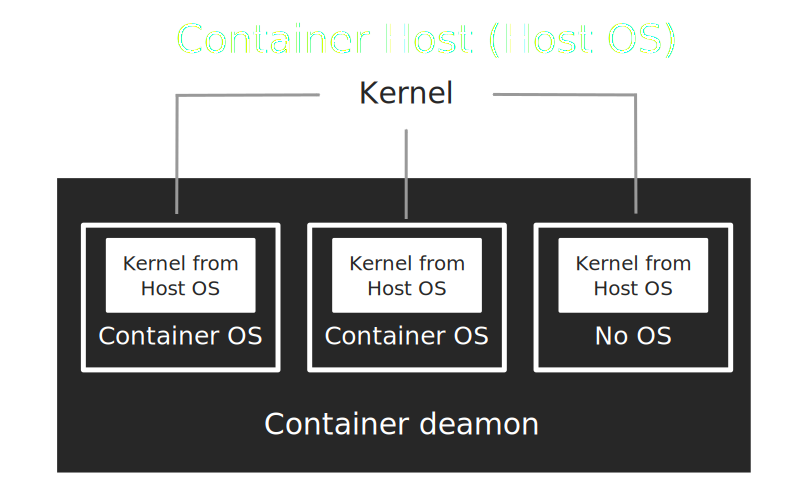
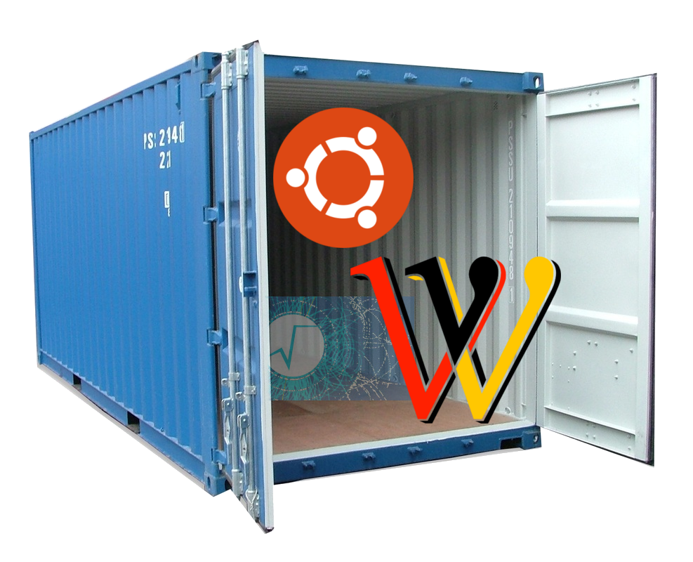
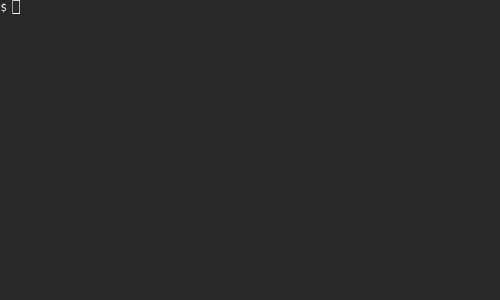
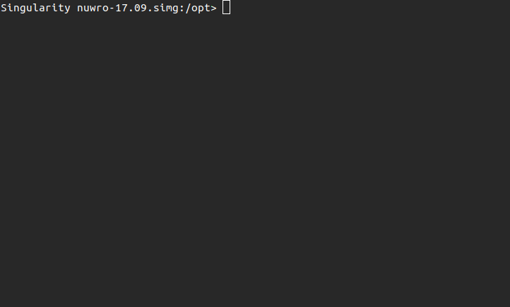

Singularity containers for NuWro
Tomasz Golan
NIWG, 06.02.18
What is a container
A container is a stand-alone executable package
operating system
libraries
software
data
It can be run on any OS
 src: docker.com
src: docker.com
OS in a container

Containers vs Virtual Machines
src: docker.com


Why to use containers
one can encapsulate software with all dependencies (libraries, data, ...) in a single executable package
easy to share with others
easy to run on clusters
easy to reproduce previous results

Singularity

src: singularity.lbl.gov
NuWro containers
Useful links
Get a container
- One can easily get a Singularity container using:
$ singularity pull shub://NuWro/builds:[tag]Default image name:
[user]-[repo]-[branch]-[tag].simg
Running NuWro from container I
- To run NuWro simply use
$ singularity run [img file]Command line arguments may be passed as usual:
$ singularity run [img] -p "param = value"Running NuWro from container II
- Containers may be run as regular executable
$ ./[img file]Command line arguments may be passed as usual:
$ ./nuwro.simg -p "param = value"Running NuWro from container IIIa
- Containers may be run in an interactive mode
$ singularity shell [img file]User has access to any application from a container and a local $HOME.
Running NuWro from container IIIb
ROOT and NuWro are installed in /opt/ folder
One can run NuWro or myroot from a container
One can use only ROOT installation to compile local copy of NuWro

Summary
Easy access to every NuWro release since 17.09
No need to install ROOT with Pythia6 and all dependencies
Running containers on a grid are possible without root permissions
There is also a container with ROOT only, which can be used to compile local copy of NuWro